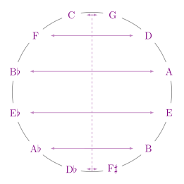
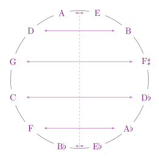
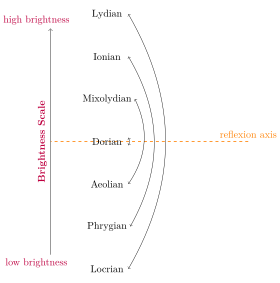

Negative Harmony inverts brightness of modes
Saturday, 20 February 2021 - ⧖ 4 minIntro
Recently I've been listening to a 12tone video on YouTube about negative harmony, a concept recently popularized by musician Jacob Collier. On the related links I found a bunch of videos from this channel with "negative harmony" versions of many popular songs.
The change in sonority of those songs clearly indicated for me a change in the mode of the song, which kind of go against the grain of what I've been told about the action of those transformations. In this post I want to explore negative harmony as a transformation not only on chords but on scales, modes and melody.
What is Negative Harmony anyway?
There are many ways to understand negative harmony and I'm not going to pretend I'm able to give a full historical background. The video by the 12tone channel that I linked above does a much better job than I ever could. Here in this post I'm mainly interested in this as a transformation that can be applied to a particular set of notes, and that's how I'm going to describe and treat it.
To understand what's the transformation being applied, consider the circle of fifths. In the key of C, the negative harmony transformation consists in swapping notes along the axis that cut the circle in half between the C and G.

The arrows above indicate the notes that are to be switched. So, to apply the negative harmony transformation in the key of C, one would change C for G, D for F, etc.
Parameterizing Negative Harmony
One aspect that is not often discussed about this transformation is that it is actually a family of transformations parameterized by a key center. Note that the reflection axis chosen above is only one chosen from 12 possibilities. To highlight this, notice that in the diagram above the transformation in the key of C takes F to D. In the diagram below we have transformation in the key of A, showing that in this case it takes F to A♭.

Transforming modes
Typically negative harmony is discussed in the context of chords, with an expectation that transformed chords has similar functions (having "equivalent tonal gravity"). I want to discuss how this transformation behaves when considering melodic elements, scales and modes.
To start, let's check what happens when we transform the seven modes of the major scale. For example, let's apply the transformation over the major scale. As an ilustration, the sequence of notes [C, D, E, F, G, A, B] (the Ionian mode of C Major), transformed in the key of C, will result in [G, F, E♭, D, C, B♭, A♭].
This sequence can be interpreted in a lot of different ways. Harmonically it is typical to consider the following argument. If the original harmony is in the key of C major, than the I chord is C major triad (C, E, G). This triad transforms to (G, E♭, C), which is an inversion of the C minor triad. Since this would also fit the role of the I chord in the new harmony, this should be interpreted as transforming from a C major harmony to a C minor one.
That's a good argument, but if we focus on the melody, the note that would be treated as the focus and resting place of the melody in the original key would be C, which would turn into G in the new melody. So, we could interpret G as the root note of the transformed sequence, which would make it a G Phrygian melody.
Let's take this second stance and see what happens with all modes. Under this interpretation this is how the modes transform:
- C Ionian transforms into G Phrygian.
- C Dorian trasforms into G Dorian.
- C Phrygian trasforms into G Ionian.
- C Lydian transforms into G Locrian.
- C Mixolydian trasforms into G Aelian.
- C Aeolian trasforms into G Mixolydian.
- C Locrian transforms into G Lydian.
Negative Harmony inverts brightness
Finally, here's the neat and interesting pattern to notice: if we ignore the roots, the quality of the modes above is transforming up and down the Brightness Scale.

The effect of the transformation is to reflect the qualities of the modes around the center of the brightness scale, inverting the value of the brightness for the mode in question (the brightest mode becomes the darkest, the second brightest becomes the second darkest, etc).
So what?
Yes, this is just a simple neat symmetry I found. I intend to write more later on some other questions:
- What happens when you transform modes of other scales?
- Modes of the major scale are closed under this transformation. But this definitely won't happen always. What does it mean when it happens?
- What happens when you transform modes under the negative harmony centered in other keys?
- Is there a "right" key to use?
Stay tuned.